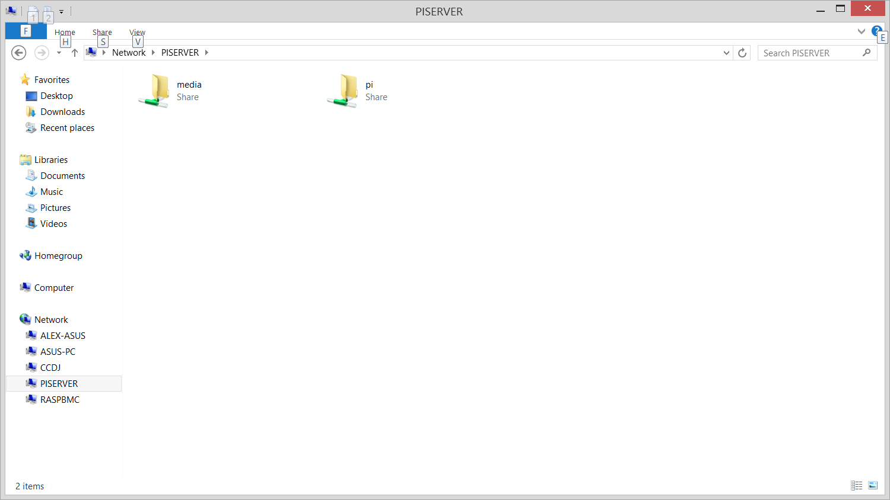
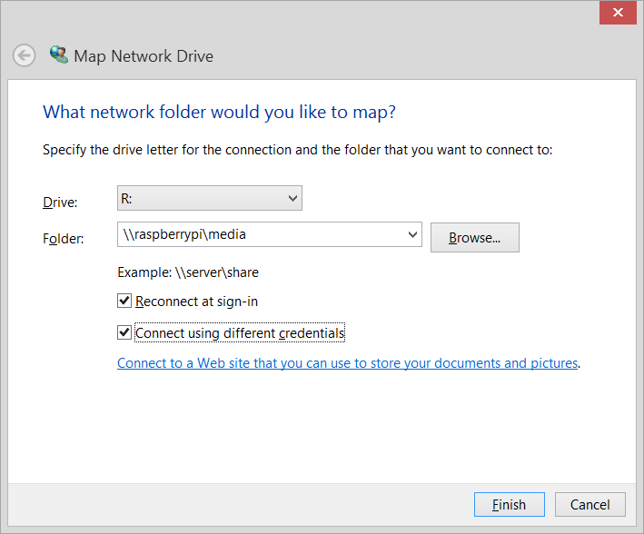

One of the better, and more useful functions of the RPI is to use it as a NAS (Network Attached Storage) server. This has a lot of advantages in that the RPI consumes very little electricity, and its quite feasible to leave it on 24/7 throughout the year. A much better alternative when you want to access a storage device from your HTPC without needing to leave your desktop or laptop on. With that said, lets move forward on how to set it up. This guide will assume that you are using the latest Raspbian, or a similar distro.
Step 1: As with most installs, you should update the package list first, and upgrade if needed.
sudo apt-get install
sudo apt-get upgrade
By default, my Raspbian build did not come with ntfs-3g, so we will need to install that as well:
sudo apt-get install ntfs-3g
Step 2: Now, attach the storage device that you want to use. For the sake of this tutorial, I will be using a windows-formatted file system. You can check the device properties using sudo fdisk -l.
pi@PiServer ~ $ sudo fdisk -l
Disk /dev/mmcblk0: 3947 MB, 3947888640 bytes
4 heads, 16 sectors/track, 120480 cylinders, total 7710720 sectors
Units = sectors of 1 * 512 = 512 bytes
Sector size (logical/physical): 512 bytes / 512 bytes
I/O size (minimum/optimal): 512 bytes / 512 bytes
Disk identifier: 0x000c7b31
Device Boot Start End Blocks Id System
/dev/mmcblk0p1 8192 122879 57344 c W95 FAT32 (LBA)
/dev/mmcblk0p2 122880 7710719 3793920 83 Linux
Disk /dev/sda: 500.1 GB, 500107861504 bytes
255 heads, 63 sectors/track, 60801 cylinders, total 976773167 sectors
Units = sectors of 1 * 512 = 512 bytes
Sector size (logical/physical): 512 bytes / 512 bytes
I/O size (minimum/optimal): 512 bytes / 512 bytes
Disk identifier: 0x209e4386
Device Boot Start End Blocks Id System
/dev/sda1 2048 976769023 488383488 7 HPFS/NTFS/exFAT
As you can see, the device I will be using is a 500gb drive, recognized as HPFS/NTFS/exFAT. I wouldn't recommend a unix file system simply because it would not be compatible with windows devices should your Pi ever go down or if you want to take the storage device somewhere.
Step 3: Now we should make the mount locations for the drives to be mounted on. This is simply a directory that you create on the Pi.
sudo mkdir /mnt/500GB
I will call the mount folder 500GB for simplicity sake, but you can name the folder whatever you wish.
Step 4: To actually mount the device to the location we have to edit the fstab file in /etc/fstab. This is how the OS knows where to mount the individual drives on bootup.
sudo nano /etc/fstab
Nano is my built-in text editor of choice, some may prefer Vim (vi)
proc /proc proc defaults 0 0
/dev/mmcblk0p1 /boot vfat defaults 0 2
/dev/mmcblk0p2 / ext4 defaults,noatime 0 1
# a swapfile is not a swap partition, so no using swapon|off from here on, use dphys-swapfile$
You should receive something similar to that, assuming you are on a new install of raspbian. Now we simply add our new device at the end of the text file.
proc /proc proc defaults 0 0
/dev/mmcblk0p1 /boot vfat defaults 0 2
/dev/mmcblk0p2 / ext4 defaults,noatime 0 1
# a swapfile is not a swap partition, so no using swapon|off from here on, use dphys-swapfile$
/dev/sda1 /mnt/500GB ntfs-3g defaults 0 0
You saw from the fdisk output that /dev/sda1 was where your storage device was connected, and /mnt/500GB was the mount point we created. Ntfs-3g is simply the file system we want to mount it as. It will not work if it is not a compatible file system.
After you have added the last line, use Ctrl + X to exit, and Y to confirm the changes to the file.
Step 5: To test if everything works, we can use:
sudo mount -a
followed by:
ls /mnt/500GB
which should display all of the files within the device.
Step 6: Now, to share this drive across the network, we are going to use Samba.
To install:
sudo apt-get install -y samba
sudo apt-get install -y samba-common-bin
To configure:
sudo nano /etc/samba/smb.conf
And find this line:
[global]
## Browsing/Identification ###
# Change this to the workgroup/NT-domain name your Samba server will part of
workgroup = WORKGROUP
We want to change WORKGROUP to HOME if we are using Windows 7/8, or leave it if it's XP.
Now, to add the new drive as a source, append to the end of the file:
[media]
path = /mnt/500GB
writeable = Yes
There are a lot more permissions for samba that you can mess around with, but this will simply let those who access the drive read/write. You can set the drive to read only if you'd like, simply switch writeable = Yes to writeable = No. This will mount a shareable directory named 'media' on your network.
Now exit and save.
Step 7: Restart the samba service
sudo service samba restart
And now to connect to the device from our windows system, we will need to add a user to Samba, use:
sudo smbpasswd -a pi
which will add a user 'pi' and prompt you for a password. This may not be necessary depending on how your Pi is set up.
Step 8: Connect!
So, using Windows 8, I was able to detect the Pi by default under networks. You should be able to log into the Pi using your normal login

If it doesn't show up, then you need to map the network drive manually.

The credentials will be the user specified in Step 7.
Finished!
So now you have a 24/7 NAS server running on the Pi, perfect for accessing your media files from afar, and from your HTPC (I recommend XBMC, which you can also run on a Pi).